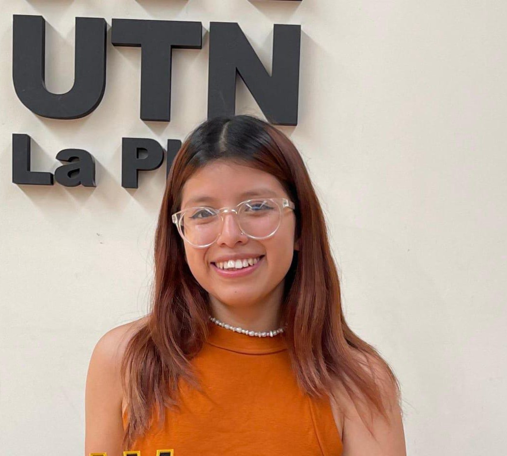

Perfil Profesional

Soy una estudiante avanzada de Ingeniería en Sistemas de Información (UTN FRLP) comprometida con mi excelencia y crecimiento profesional.Busco aplicar mis habilidades analíticas para diseñar sistemas que optimicen el rendimiento y la gestión empresarial. Poseo experiencia académica en simulación de sistemas, visualización de datos en tiempo real y modelado de procesos de negocio complejos. Disfruto trabajar en equipo, fomentando el intercambio de ideas para encontrar soluciones innovadoras y eficientes. Me defino como una persona creativa, dinámica y organizada, con el objetivo de desarrollarme como profesional en areas de datos y transformacion digital.